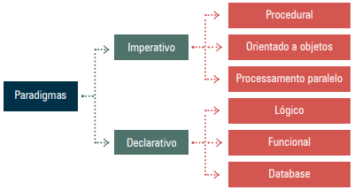

Uma linguagem de programação é uma notação formal que permite ao programador descrever algoritmos com precisão. Os algoritmos são pensados como soluções lógicas que resolvem problemas computacionais. Quanto mais simples e estruturado o algoritmo, mais fácil será sua tradução em código.
As linguagens podem ser classificadas quanto ao seu nível de abstração:
Além disso, as linguagens seguem diferentes paradigmas de programação — estilos distintos de estruturar e organizar soluções. Os dois principais são o imperativo e o declarativo.
O paradigma imperativo foca na descrição passo a passo de como uma tarefa deve ser executada. O programador determina as instruções exatas que o computador deve seguir, em uma sequência bem definida. Esse paradigma trabalha com a manipulação direta do estado do programa por meio de variáveis, comandos, estruturas de controle e repetições.
Dentro do paradigma imperativo, existem subparadigmas que diferenciam as abordagens utilizadas:
No paradigma declarativo, o programador especifica o que deseja que seja feito, sem indicar como a tarefa será realizada. A execução e otimização ficam a cargo do interpretador ou compilador da linguagem. Esse paradigma foca no resultado e não no processo.
Uma variável é um espaço de memória identificado por um nome e destinado a armazenar um valor durante a execução do programa. Em C#, a declaração segue o modelo:
tipo nome;
Exemplo:
int saldo;
As variáveis podem ser:
static.Constantes armazenam valores que não mudam durante a execução. Devem ser inicializadas na declaração. Exemplo:
const double PI = 3.1415;
| Tipo | Descrição | Exemplo |
|---|---|---|
| int | Inteiro 32 bits | int idade = 48; |
| long | Inteiro 64 bits | long valor = 45L; |
| float | Decimal 32 bits | float altura = 1.98F; |
| double | Decimal 64 bits | double peso = 0.85; |
| string | Texto | string nome = "Ana"; |
| bool | Lógico | bool ativo = true; |
As saídas no console são realizadas pelos métodos Console.Write() e
Console.WriteLine(). A diferença é que WriteLine() adiciona uma quebra de linha.
1 Console.Write("Nome: ");
2 Console.WriteLine("João");
Exibição com variáveis:
1 int idade = 20;
2 Console.WriteLine("Idade: " + idade);
3 Console.WriteLine("Idade: {0}", idade);
Para entrada de dados, usa-se:
Console.ReadLine(): lê a entrada como string.Console.Read(): lê próximo caractere como inteiro (ASCII).Console.ReadKey(): aguarda uma tecla ser pressionada.Como ReadLine() retorna string, é necessário converter para outros tipos:
1 int idade = Convert.ToInt32(Console.ReadLine()); 2 double altura = Convert.ToDouble(Console.ReadLine());
As principais instruções para entrada e saída de dados em C# são:
Console.Write(): exibe um texto no console, mantendo o cursor na mesma linha.Console.WriteLine(): exibe um texto e avança para a próxima linha.Console.ReadLine(): lê uma linha de texto digitada pelo usuário.Console.Read(): lê o próximo caractere digitado e retorna seu valor inteiro (código ASCII).
Console.ReadKey(): espera o usuário pressionar uma tecla antes de continuar a execução.Convert.ToInt32(): converte o valor lido (string) para um número inteiro.Convert.ToDouble(): converte o valor lido para um número decimal (double).Essas instruções são essenciais para a comunicação entre o programa e o usuário, e permitem construir sistemas interativos por meio do console.
Exemplo completo:
1 Console.WriteLine("Digite seu nome:");
2 string nome = Console.ReadLine();
3 Console.WriteLine("Olá, {0}!", nome);
4
5 Console.Write("Digite sua idade: ");
6 int idade = Convert.ToInt32(Console.ReadLine());
7 Console.WriteLine("Idade: {0}", idade);
8
9 Console.WriteLine("Pressione uma tecla para sair.");
10 Console.ReadKey();
Neste código temos:
WriteLine e Write para exibir mensagens.ReadLine().Convert.ToInt32().ReadKey().Veja o seguinte vídeo e acompanhe no seu computador para melhor entendimento: link
O capítulo abordou os principais fundamentos do paradigma imperativo, a organização de dados com variáveis e constantes, os principais tipos de dados em C# e a interação com o usuário por meio de entrada e saída no console.
Praticar os exemplos propostos permitirá ao estudante desenvolver uma base sólida para a criação de programas simples e estruturados.
{% include nav-aula.html materia="algoritmoseprogramacao1" aula="6" %} {% include footer.html %}